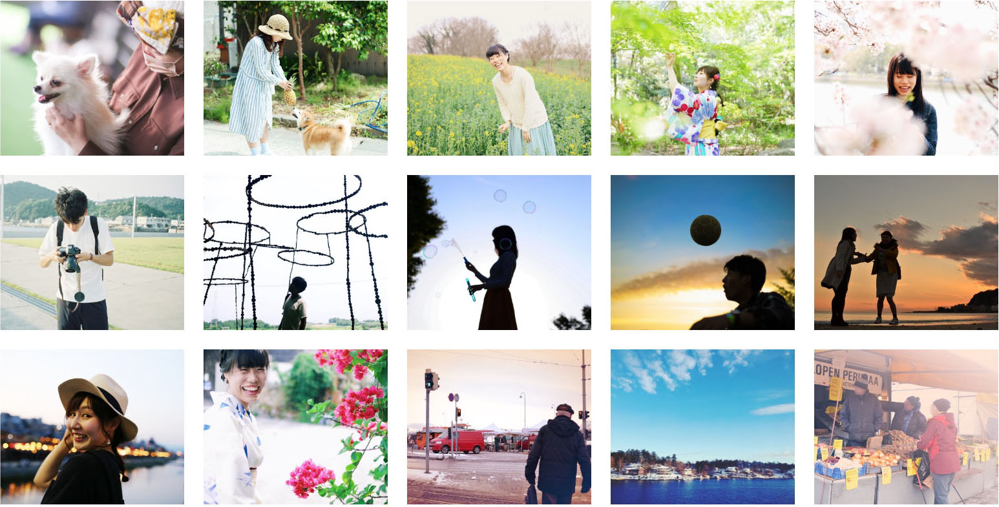
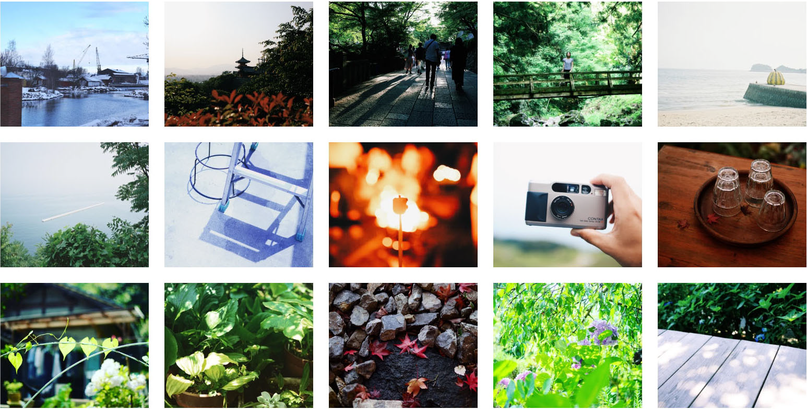
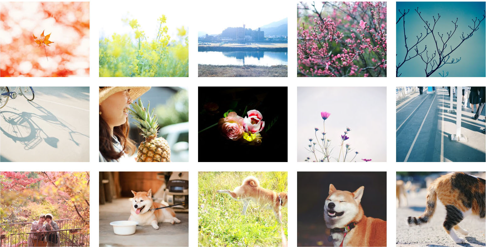
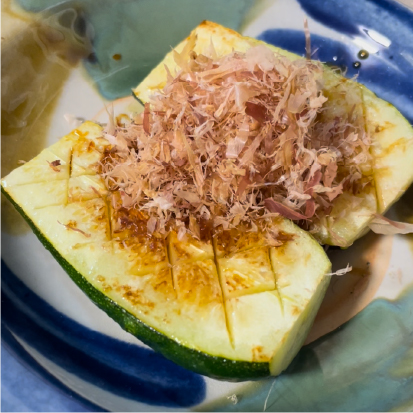
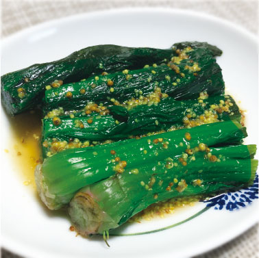

ズッキーニの和風ステーキ
- ズッキーニを縦半分に切り、断面に網目状の切れ込みを入れる
- フライパンに油を引いて、ズッキーニを入れて蓋をして焼く
- 焦げ目がついたら裏返し、蓋をして焼く
- いい焼け目がついたらお皿に盛り付け、醤油とかつお節を適量かけて完成



島根県出身の1993年生まれ（なんと教室のビルと同じ年月生まれ！）で、大学進学で広島にやってきました。そのまま広島の福祉企業に就職し、総務や採用関係の事務を経験。前職での資料作りやデザイナーさんとの関わりをきっかけに、デザインに関わる仕事に興味を持ち、勉強をスタート。
中学の部活の先輩に名字の漢字を説明をしたときに、「”尾”は尾っぽの”尾”です！」と伝えたら響きを気に入られて、そのまま「おっぽ」と呼ばれるようになりました。愛着が湧いたので、あだ名を聞かれたらこの呼び名を伝えています。
きっかけはお祖母ちゃん家にあった『ドラえもん』と『ブラックジャック』
新刊を楽しみにしている漫画は『ダンジョン飯』『乙嫁語り』『スキップとローファー』『ブルーピリオド』『きのう何食べた？』『HUNTER×HUNTER』など。
文化や人の心の動きを丁寧に描いている作品や、物語として情熱を感じる作品が好み。
好きなアニメは『Fate/stay night UBW』『夏目友人帳』『PSYCHO-PASS』など。
最近面白かったのは『ジョジョの奇妙な冒険』『王様ランキング』『ODD TAXI』など。
印象に残っている邦画は『湯を沸かすほどの熱い愛』『怒り』『空白』など。
洋画は『アバウトタイム』『パラサイト半地下の家族』『ゲットアウト』『ホテルムンバイ』『キングスマン』など。
ミステリーや社会派、アクション～心が温かくなる作品まで、人のおすすめや気になる作品を視聴。
心に残っているのは『ドラゴンクエストⅤ 天空の花嫁』と『ワンダと巨像』
ストーリー性のある作品や、ゲームのメタ的要素と物語がうまくかみ合い、物語をゲームで受け取る意義のある作品が好き。
心に残っている本はカズオ・イシグロ著『日の名残り』
近年で面白かった本は『1984』『13歳からのアート思考』『認知行動療法入門』
最近積みあがった本は『Webディレクターの教科書』『ハリーポッター文庫本セット』など。
友人や家族の写真を撮るのが好き。旅行などでカメラを持ち出すのが好きだったが、コロナ禍とライフスタイルの変化で機会が激減してご無沙汰中。
ASIAN KUNG‐FU GENERATIONとYUKIが好き。


※固くしぼればしぼるほど濃い味に仕上がります